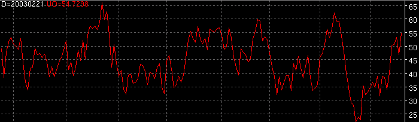

Ultimate Oscillator - UO

Parameters:
Color - UO color
Line Type - UO line type
Label - The text to identify the UO plot
Short Period - Short UO period
Medium Period - Medium UO period
Long Period - Long UO period
Description: